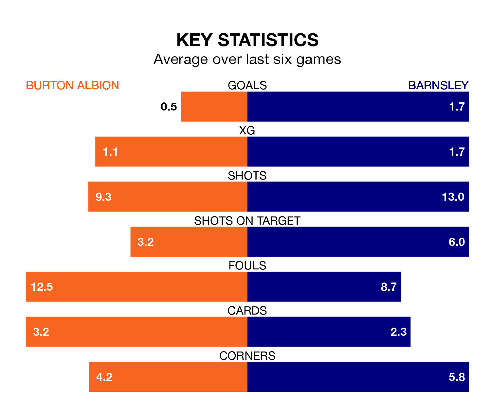

Barnsley are strong favourites to take all three points despite Burton Albion's home advantage in Monday's match at the Pirelli Stadium.
*Betting Company* are offering odds of 1.91 on Barnsley sealing the win, with the visitors sitting fifth in EFL League One table.
Burton, who are 20th in the league and 31 points behind the Tykes, are priced at 3.75 to win. A draw is set at 3.4.
With 70 goals in 39 games so far this season, Barnsley are the league's joint-third-highest scorers with 1.8 goals per game. And they are conceding at an average rate, letting in 50 goals at a rate of 1.3 per game.
Burton, meanwhile, are below average scorers, with 0.8 goals per game, compared to a league average of 1.3. They have conceded 1.3 goals per game.
Albion are in terrible form in EFL League One, with no wins and two draws from their last six games.
With two wins and two draws over that period, the Tykes's form is much better – they have taken eight points from 18, compared to the Brewers' two.
In the last 10 years, Burton and Barnsley have played each other on 12 occasions. Burton won three of them, Barnsley five, and they drew four times.
On average, the Brewers scored 0.8 goals and the Tykes 1.5 in those matches.
Their last meeting was on September 16, when Barnsley won 2-0 at home.
In Devante Cole, the away side have one of the league's sharpest shooters so far this season. He has notched 17 goals in 39 appearances, to sit third in the scoring charts.
His goal rate of one every 186 minutes is quicker than that of Beryly Lubala, the hosts' top scorer with a goal every 309 minutes, and a total of seven goals in 31 games.
Burton's last match was on Friday, a 1-1 draw against Wigan Athletic, with John Brayford getting the goal for the Brewers.
Barnsley lost 2-0 against Cambridge United last time out, also on Friday.
Monday's match will be refereed by Martin Coy, who has taken charge of nine EFL League One games so far this season, issuing two red cards and booking 28 players. He has awarded six penalties.
The last Barnsley game Coy refereed was the 3-1 loss at home against Oxford United on August 19. He is yet to oversee a match featuring Burton this season.
Updated: 10:31 (UTC), 31/03/24